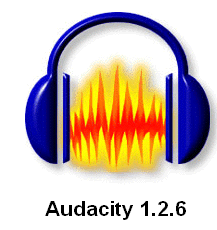

2.4. Edición de sonido con Audacity
A través de las diferentes pràcticas de este tema, irás conociendo en funcionamiento del programa de edición de sonido digital Audacity.
Todos los archivos de sonido utilizados en esta sección provienen del centro de resursos multimedia que ofrece el MEC desde su página web http://bancoimagenes.cnice.mec.es bajo licencia
Es conveniente que los alumnos vayan viendo el efecto que se produce sobre una pista las opciones de los diferentes menús.
Audacity es un editor de sonido digitat multiplataforma, libre y con licencia GPL.
¿Que se puede hacer con Audacity?
- Hacer grabaciones multipista y reproducir sonidos
- Importar y exportar archivos a los formatos WAV, OGG Vorbis , MP3 (con la libreria LAME instalada), etc.
- Editar sonidos con las herramientas típicas de edición (cortar, copiar , pegar, borrar)
- Aplicar efectos especiales.
- Aplicar filtros para mejorar las grabaciones.
- Crear proyectos multipista.
¿Que no se puede hacer con Audacity?
- No se puede leer directamente de un CD-Audio, para poder utilizar las canciones conentenidas en un CD previamente se han de extraer las pistas con otro programa (como el visto en lel punto 2.1).
- Puede leer los archivos con formato MIDI pero no puede reproducirlos.
Cuando se trabaja con Audacity hay que tener unas consideraciones:
- Trabaja con un formato particular que tiene como extensión .aup. Este formato ocupa mucho espacio y no es válido si queremos escuchar el sonido generado en otro dispositivo o reproductor pero nos permite utilizar todo el potencial del trabajo con multipistas.
- Para utilizar el sonido generado hay que esportarlo previamente a otro formato (como OGG o MP3).
- Cada vez que se graba algo (a través del dipositivo de entrada como el micro) se genera una nueva pista.
- Para utilizar más de una pista en un proyecto se han de importar las pistas (y no abrir un "nuevo" Aucacity para cada pista)
Este artículo está licenciado bajo Creative Commons Attribution-NonCommercial 2.5 License
Formació del Professorat - CEFIRE